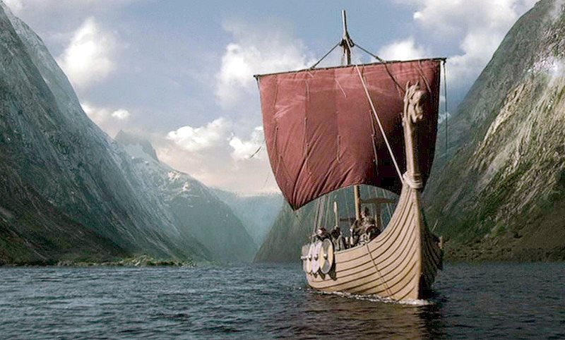

History
Throughout history sailing has been instrumental in the development of civilization, affording humanity greater mobility than travel over land, whether for trade, transport or warfare, and the capacity for fishing. The earliest representation of a ship under sail appears on a painted disc found in Kuwait dating between 5000 and 5500 BCE. Polynesian oceanfarers traveled vast distances of open ocean in outrigger canoes using navigation methods such as stick charts. Advances in sailing technology from the Middle Ages onward enabled Arab, Chinese, Indian and European explorers to make longer voyages into regions with extreme weather and climatic conditions. There were improvements in sails, masts and rigging; improvements in marine navigation, including the cross tree and charts of both the sea and constellations, allowed more certainty in sea travel. From the 15th century onwards, European ships went further north, stayed longer on the Grand Banks and in the Gulf of St. Lawrence, and eventually began to explore the Pacific Northwest and the Western Arctic. Sailing has contributed to many great explorations in the world.
Sailing
Sailing is a kind of human activity related to practicing sports, tourism and recreation mainly on sailing equipment. Sailing, and therefore sailing tourism, can be practiced on various equipment. These are primarily sailboats (small, open-deck inland boats) and sailing yachts (single and multihulls). The majority of yachts in Poland are sailing and motor yachts intended mainly for navigation on inland waters. It is estimated that Poland has about 60,000 in use. sailboats and yachts, including about 10,000 in Masuria. In addition, there are approximately 100 yachts certified to allow ocean cruises.